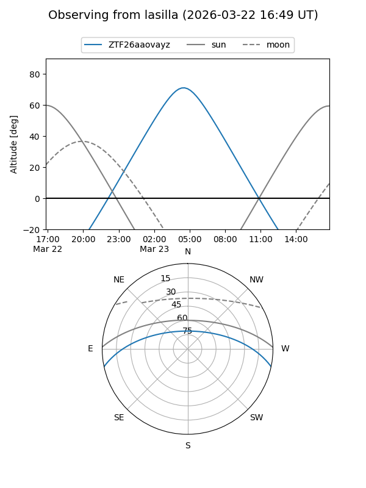
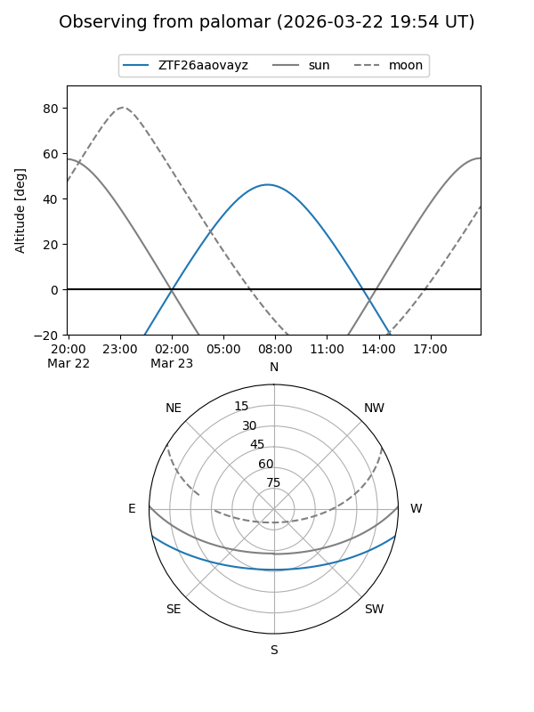

ZTF26aaovayz
Target ZTF26aaovayz at 2026-03-23 08:43
Aliases and brokers:
FINK: link
Lasair: link
ALeRCE: link
alt names
ZTF26aaovayz (ztf,fink_ztf)
Coordinates:
equatorial (ra, dec) = 176.9028,-10.28877
equatorial (HMS+DMS) = 11:47:36.68,-10:17:19.58
galactic (l, b) = (278.3145,+49.50779)
Flags:
Photometry:
last ztfg=17.17
1 ztfg detections
Lightcurve
Visibility


Additional plots